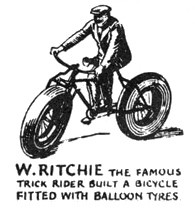
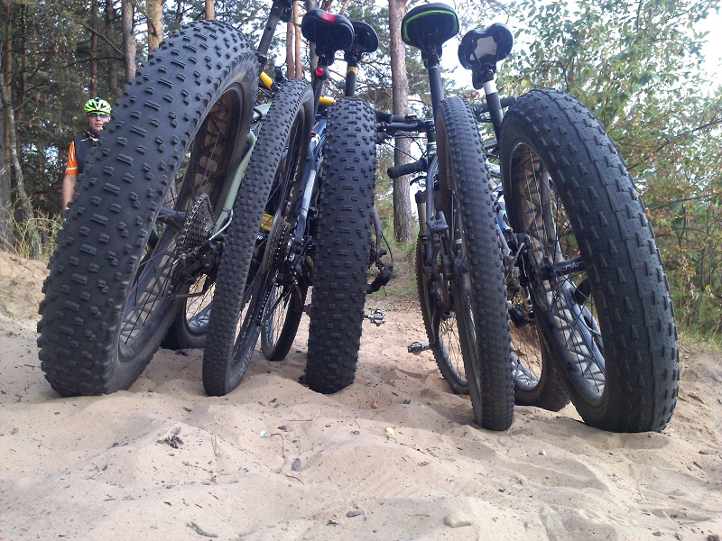
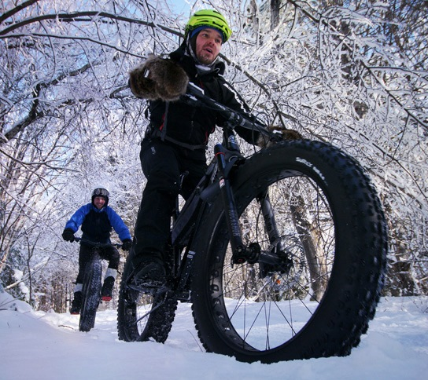

Заглянем в прошлое

Чтобы лучше разобраться в том, что такое фэтбайк и как он выглядит, желательно немного окунуться в историю
его происхождения. Первые такие двухколёсные транспортные средства появились, когда один изобретатель из
Аляски растянул покрышки в 3 дюйма до размера обода велосипеда. В итоге он стал основателем первой фирмы,
специализирующейся на производстве комплектующих для фэтбайков. Такое открытие позволило наслаждаться
длительными поездками даже в снежную погоду, поэтому новинка была тепло принята и оценена многими знатоками
байков.
Потом конструкции начали использовать даже на Южном полюсе, а управляла фэтбайком» Мария Лейерштам.
Впечатляющее открытие взяли на вооружение известные изготовители велосипедов. Они создали идеальную
двухколёсную технику, оснастив её качественными комплектующими и усовершенствовав саму конструкцию.
Эволюция фэтбайков
Это транспортное средство стремительно завоёвывало популярность, поэтому возникла необходимость немного
«облегчить» его. Изначально велосипед с толстыми шинами много весил, и использовать его в городских условиях
было нецелесообразно. Постепенно производители начали выпускать лёгкие модели, экспериментируя с доступными
вариантами. Самые простые велосипеды с толстыми покрышками имеют раму из углеродистого волокна и вес меньше
10 кг. Добиться таких показателей позволило улучшение подвески, трансмиссии и тормозной систем
Какой тип лучше?

Велосипед на толстых колёсах может иметь разные типы подвески. Чтобы определиться с тем, что именно вам
нужно (двухподвес, хардтейл или софтейл), необходимо проанализировать некоторые моменты:
- качество дорог
- болото
- песок
- камни
- сумма, которую вы готовы потратить на покупку;
- желаемый вес конструкции.
Фэтбайк двухподвесного типа идеально подходит для горной местности, однако его масса несколько больше за
счёт наличия дополнительных элементов. В городских условиях лучше использовать велосипед с широкими
покрышками хардтейл. Он довольно жёсткий при езде, хорошо подходит для ровных дорог.
Если говорить о стоимости, можно отметить, что цена на разные велосипеды часто существенно различается. Чем
больше двухколёсное транспортное средство приспособлено к езде в экстремальных условиях, тем дороже оно
обойдётся. Это напрямую зависит от комплектации фэтбайка. Для горных местностей нужна усовершенствованная
трансмиссия, а также подвеска и остальные элементы.
Вес и размеры фэтбайка тоже можно назвать влияющими на выбор факторами. Рекомендованная ширина покрышек ― 4
дюйма. Этот показатель обеспечивает достаточную проходимость и делает велосипед приспособленным к
передвижению в экстремальных условиях. Общая масса фэтбайка ― 14-17 кг, при этом основной вес приходится
именно на колёса:
- обод ― приблизительно 1 кг;
- шина ― около 1,5 кг;
- камера ― 250-350 гр.
Велосипед фэтбайк достаточно много весит, но он проявляет себя на ходу примерно так же, как и
горный. Выбор за вами!
Достоинства и недостатки

Стоит ли покупать такую модель? Пересаживаться ли с горного велосипеда на фэтбайк? Плюсы и минусы есть у
каждого транспортного средства. Двухколёсная техника с толстыми покрышками ― не исключение. Основные
преимущества фэтбайков:
- преодоление любых препятствий на пути;
- универсальность (за счёт чего байк подходит для езды по горным местностям и ровным дорогам);
- стильный дизайн, который подчеркнёт брутальность своего обладателя.
Велосипед с толстыми колёсами с лёгкостью передвигается по песчаным поверхностям. Обычные модели с ними не
справляются.
Плюсы фэтбайка довольно существенные, однако есть и недостатки:
- Большой вес. Некоторые модели имеют массу около 20 кг.
- Внешний вид колёс. Покрышки большие, и это часто приводит в недоумение окружающих. Особенно удивляются
люди, которые вообще не представляют, как выглядит фэтбайк. Если вы не боитесь осуждений со стороны, это
не станет проблемой.
- Высокая стоимость. При производстве используются очень качественные детали и комплектующие, поэтому
такие товары не каждому приходятся по карману. В среднем они обходятся в 400-1000 долларов.
- Расходы на экипировку и ремонт. Рано или поздно может понадобиться сервисное обслуживание, поэтому
вкладывать средства в фэтбайк придётся в любом случае.
Многие пользователи отмечают, что плюсов значительно больше. Сегодня такие модели стремительно завоёвывают
популярность, отодвигая на задний план традиционные транспортные средства.